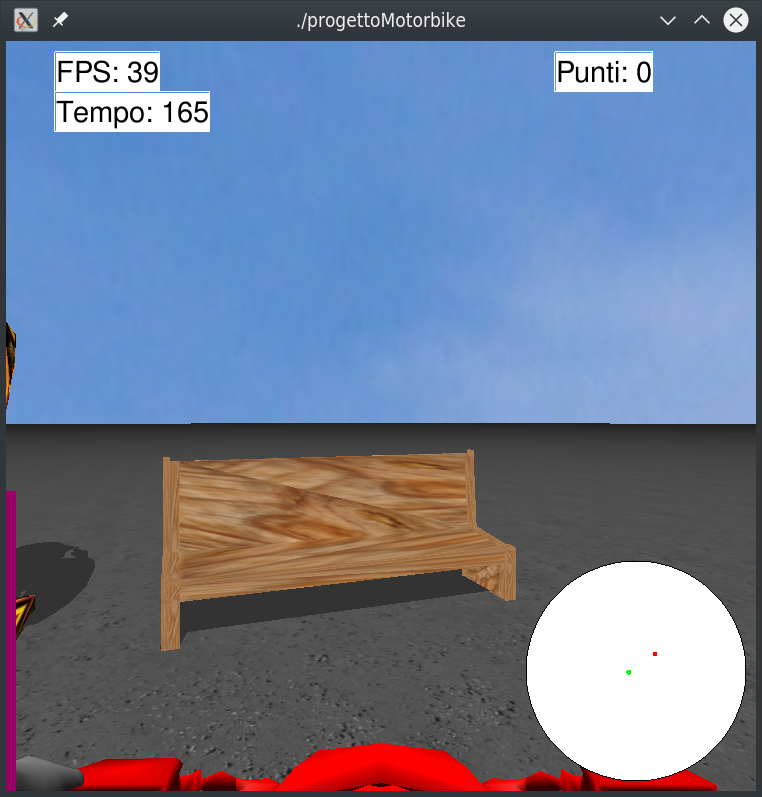

Il gioco consiste nel guidare una moto facendola passare sotto il maggior numero possibile di archi (detti waypoints) entro lo scadere del tempo. Per guidare la moto è possibile usare i classici tasti WASD. Sono inoltre disponibili i seguenti tasti funzione:
F1: cicla attraverso i vari tipi di camera
F2: abilita/disabilita la visualizzazione wireframe
F3: abilita/disabilita l'environment mapping della carlinga della moto
F4: abilita/disabilita la luce del faro anteriore della moto
F5: abilita/disabilita la visualizzazione delle ombre
Meshes
La maggior parte delle meshes usate è stata scaricata dal sito Turbosquid. La mesh del pilota, inizialmente in T-pose, è stata modificata in Blender per apparire seduta sulla moto. La mesh della moto è stata suddivisa in differenti mesh separate (carlinga, ruota anteriore, cerchione anteriore, ruota posteriore, cerchione posteriore), in modo da poter gestire la rotazione e i movimenti delle ruote (è possibile visualizzare i movimenti della ruota anteriore scegliendo un'apposita camera tramite il pulsante ).
La mesh della pozzanghera è stata creata in Blender usando delle curve di Bézier; tale curva è stata succesivamente trasformata in mesh e l'interno del contorno definito dalla curva è stato riempito, creando una superficie piana.
Mesh della pozzangheraMeshes del pilota e della moto
Tutte le mesh vengono renderizzate usando la normale per vertice (Gouraud shading), tranne la mesh delle ruote, renderizzate usando la normale per faccia (flat shading).
Textures
Nel gioco sono state applicate diverse textures: sul pavimento, sul tabellone, sulla carlinga della moto, sui waypoints, sulla panchina e sui barili.
Per quanto riguarda il pavimento, è stata applicata una texture specificando manualmente le coordinate texture per ogni vertice di ogni quad che costituisce il pavimento, tramite glTexCoord2f. Il colore della textures viene poi moltiplicato per il colore scelto per il pavimento, componente per componente.
Per quanto concerne il tabellone, è stata applicata una foto personale nella seguente maniera: viene creato un quad, tramite glBegin(GL_QUADS), le cui coordinate corrispondono ai vertici del bounding box della parte superiore del tabellone (il pannello); si specificano poi manualmente le coordinate textures per ogni vertice del quad.
Tabellone con la foto
Per i barili è stata invece abilitata la generazione automatica delle coordinate textures, tramite glEnable(GL_TEXTURE_GEN_S) e glEnable(GL_TEXTURE_GEN_T), specificando poi s e t, ossia i coefficienti da usare nella corrispondente funzione per la generazione delle coordinate texture, tramite glTexGenfv(GL_S, GL_OBJECT_PLANE, s) e glTexGenfv(GL_S, GL_OBJECT_PLANE, t). La texture generation function è scelta usando il parametro GL_OBJECT_LINEAR in glTexGeni(GL_S, GL_TEXTURE_GEN_MODE , GL_OBJECT_LINEAR)
e glTexGeni(GL_T, GL_TEXTURE_GEN_MODE , GL_OBJECT_LINEAR). Il risultato è mostrato nella foto sottostante.
Barili con texture
La texture della carlinga viene applicata usando la tecnica dell'environment mapping, specificando il parametro GL_SPHERE_MAP in glTexGeni.
Per quanto riguarda la panchina, per avere risultati gradevoli alla vista, è stata applicata una texture ad ogni faccia/triangolo della mesh, aggiungendo al file mesh.cpp la funzione void Mesh::RenderNxV_TexturedFaces. È stata effettuata questa scelta perché la generazione automatica delle coordinate texture produceva risultati sgradevoli (la texture appariva "stretchata" e allungata eccessivamente).
La texture dei waypoints (gli archi), che simula l'effetto del marmo, è applicata usando gluQuadricTexture passando true come secondo parametro per abilitare la generazione di coordinate texture. I waypoints verranno discussi in maniera più approfondita nella sezione a loro dedicata.

Texturing della panchinaTexturing del waypoint
Illuminazione e materiali
Il modello di illuminazione usato dal gioco è il modello di Phong, caratterizzato da 3 componenti: illuminazione ambiente, componente riflessa diffusa e speculare. La componente ambientale è settata tramite il seguente codice:
Il parametro GL_LIGHT_MODEL_LOCAL_VIEWER settato a true permette di calcolare la riflessione speculare dall'origine del sistema di coordinate dell'osservatore (fonte).
Sono inoltre disponibile altre luci: una luce puntiforme settata tramite glLightfv e due luci spotlight, quella del faro della moto (che può essere abilitata e disabilitata tramite F4) e quella di un lampione di luce.
Le direzioni della luce del faro della moto e del lampione sono state specificate settando GL_SPOT_DIRECTION nella funzione glLightfv; inoltre sono stati specificati GL_SPOT_CUTOFF e GL_SPOT_EXPONENT. La luce del faro della moto viene attenuata tramite l'utilizzo di GL_COSTANT_ATTENUATION e GL_LINEAR_ATTENUATION, mentre la luce del lampione, per renderla più evidente, non viene attenuata.
Per quanto riguarda la statua, la pompa della benzina e la pistola della pompa della benzina, sono stati settati i materiali, in modo da fare in modo che la luce si comporti in maniera diversa su queste componenti. Ciò è stato fatto specificando i parametri delle componenti ambientale, riflessa diffusa e speculare precedentemente menzionate. Qui sotto viene riportato come esempio la funzione setupStatuaMaterial usata per configurare il materiale della statua (bronzo):
I valori per i materiali sono stati ottenuti dal sito devernay.
Waypoint
Anzichè usare le mesh, i waypoint sono stati realizzati usando GLUquadricObj, in modo tale da fare esercizi con le altre funzioni GLU. Nello specifico vengono disegnati due cilindri concentrici (tramite gluCylinder) e due dischi (tramite gluDisk) agli estremi dei cilindri, in modo tale da creare un arco con spessore. All'arco viene poi applicata la texture nel modo specificato nel paragrafo Textures. La geometria così definita viene poi collocata nello spazio in maniera tale da essere visibile solo per metà (per dare appunto l'idea di un arco), l'altra metà della "ciambella" è nascosta sotto il pavimento.